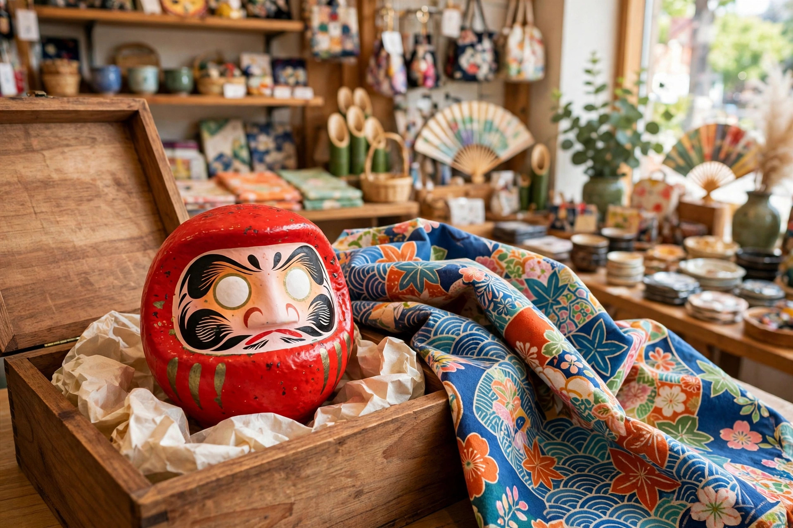

海外への贈り物にだるま ― 外国人に人気の理由と贈る際の注意点

この記事の結論
だるまは「目標を設定したら片目を入れ、達成したらもう片目を入れる」という体験型の縁起物で、ゴール設定やレジリエンス（立ち直る力）の象徴として海外でも人気があります。贈る際は、英語の説明カードを添えること、持ち帰りやすい小さめサイズ（0〜3号）を箱入りで選ぶこと、由来を一言添えることが喜ばれるポイントです。
なぜ海外でだるまが人気なのか
「ゴール設定の道具」として分かりやすい
海外では、だるまは願いを叶えるお守りというより「目標達成のためのツール」として紹介されることが多くあります。新年の抱負やプロジェクトの開始時に片目を入れ、達成したら両目を開く。自己啓発やマインドフルネスの文脈と相性がよく、ビジネスの現場でも受け入れられています。
「転んでも起き上がる」レジリエンスの象徴
押しても倒れない構造と「七転び八起き」の物語は、国や文化を越えて伝わります。失敗から立ち直ることへの共感は普遍的で、起業家やアスリートへの贈り物としても選ばれています。
インテリアとしての存在感
丸いフォルムと鮮やかな色は、部屋のアクセントとしても人気です。カラフルなデザインだるまは、和風すぎない贈り物としても選ばれています。飾り方のヒントはインテリアとしてのだるまの記事もご覧ください。
英語での説明文例
贈るときは、短い説明カードを添えるのがおすすめです。そのまま使える文例を紹介します。
"A Daruma is a traditional Japanese doll that symbolizes perseverance and goal achievement. You fill in one eye when you set a goal, and the other eye when you achieve it. It always stands back up when tipped over — a reminder to never give up."
（だるまは、忍耐と目標達成を象徴する日本の伝統人形です。目標を決めたときに片目を入れ、達成したときにもう片方の目を入れます。倒しても起き上がる姿は「諦めないこと」の象徴です。）
贈る際の注意点
- サイズ：持ち帰りを考えると高さ6〜12cm（0〜3号）が無難。スーツケースの中で圧迫されると張り子が凹むことがあるため、箱入りのものを選ぶ
- 目は白いままで渡す：目入れは相手自身の体験です。両目が入った完成品より、白目のだるまに説明カードを添えるのが正解
- 色の意味を添える：赤は開運、金は金運など、色の意味を英語で一言添えると選んだ理由が伝わる（色の意味はだるまの色の意味の記事参照）
- 由来への配慮：禅の開祖・達磨大師がモデルであることは豆知識として好評ですが、相手の宗教観が不明な場合は「日本の縁起物・民芸品」として紹介すると角が立ちません
よくある質問
Q. だるまを英語で何と説明すればよいですか？
A. 「目標を決めたときに片目を入れ、達成したときにもう片目を入れる、目標達成のシンボルです」と伝えるのが分かりやすいです。本文の文例もご活用ください。
Q. 目が白いだるまを怖いと言われたらどう説明しますか？
A. 目が白いのは未完成ではなく「願いを込めて自分で目を入れる」ための余白だと説明してください。体験型のギフトだと伝えると、むしろ魅力として受け取ってもらえます。
Q. 海外への持ち帰りに適したサイズはどれですか？
A. 高さ6〜12cm程度（0〜3号）が扱いやすいです。張り子で軽い一方、強い圧力で凹むことがあるため、箱入りのものを選ぶと安心です。
Q. 宗教上の配慮は必要ですか？
A. だるまは禅僧・達磨大師に由来しますが、現代では宗教儀礼の品というより縁起物・民芸品として親しまれています。相手の宗教観が気になる場合は、その背景を一言添えて紹介すると丁寧です。